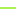

<!doctype html>
<html lang="en">
    <head>
        <meta charset="utf-8">
        <meta http-equiv="X-UA-Compatible" content="IE=edge">
        <meta name="viewport" content="initial-scale=1,user-scalable=no,maximum-scale=1,width=device-width">
        <meta name="mobile-web-app-capable" content="yes">
        <meta name="apple-mobile-web-app-capable" content="yes">
        <link rel="stylesheet" href="css/leaflet.css"><link rel="stylesheet" href="css/L.Control.Locate.min.css">
        <link rel="stylesheet" href="css/qgis2web.css"><link rel="stylesheet" href="css/fontawesome-all.min.css">
        <link rel="stylesheet" href="css/leaflet-search.css">
        <link rel="stylesheet" href="css/leaflet-measure.css">
        <style>
        html, body, #map {
            width: 100%;
            height: 100%;
            padding: 0;
            margin: 0;
        }
        </style>
        <title></title>
    </head>
    <body>
        <div id="map">
        </div>
        <script src="js/qgis2web_expressions.js"></script>
        <script src="js/leaflet.js"></script><script src="js/L.Control.Locate.min.js"></script>
        <script src="js/leaflet.rotatedMarker.js"></script>
        <script src="js/leaflet.pattern.js"></script>
        <script src="js/leaflet-hash.js"></script>
        <script src="js/Autolinker.min.js"></script>
        <script src="js/rbush.min.js"></script>
        <script src="js/labelgun.min.js"></script>
        <script src="js/labels.js"></script>
        <script src="js/leaflet-measure.js"></script>
        <script src="js/leaflet-search.js"></script>
        <script src="data/JaringanJalan_1.js"></script>
        <script src="data/TitikHalte_2.js"></script>
        <script>
        var map = L.map('map', {
            zoomControl:true, maxZoom:28, minZoom:1
        }).fitBounds([[-7.339644523405796,112.73378968839243],[-7.332709021259269,112.74389462260989]]);
        var hash = new L.Hash(map);
        map.attributionControl.setPrefix('<a href="https://github.com/tomchadwin/qgis2web" target="_blank">qgis2web</a> &middot; <a href="https://leafletjs.com" title="A JS library for interactive maps">Leaflet</a> &middot; <a href="https://qgis.org">QGIS</a>');
        var autolinker = new Autolinker({truncate: {length: 30, location: 'smart'}});
        L.control.locate({locateOptions: {maxZoom: 19}}).addTo(map);
        var measureControl = new L.Control.Measure({
            position: 'topleft',
            primaryLengthUnit: 'meters',
            secondaryLengthUnit: 'kilometers',
            primaryAreaUnit: 'sqmeters',
            secondaryAreaUnit: 'hectares'
        });
        measureControl.addTo(map);
        document.getElementsByClassName('leaflet-control-measure-toggle')[0]
        .innerHTML = '';
        document.getElementsByClassName('leaflet-control-measure-toggle')[0]
        .className += ' fas fa-ruler';
        var bounds_group = new L.featureGroup([]);
        function setBounds() {
        }
        map.createPane('pane_GoogleSatellite_0');
        map.getPane('pane_GoogleSatellite_0').style.zIndex = 400;
        var layer_GoogleSatellite_0 = L.tileLayer('https://mt1.google.com/vt/lyrs=s&x={x}&y={y}&z={z}', {
            pane: 'pane_GoogleSatellite_0',
            opacity: 1.0,
            attribution: '',
            minZoom: 1,
            maxZoom: 28,
            minNativeZoom: 0,
            maxNativeZoom: 19
        });
        layer_GoogleSatellite_0;
        map.addLayer(layer_GoogleSatellite_0);
        function pop_JaringanJalan_1(feature, layer) {
            var popupContent = '<table>\
                    <tr>\
                        <th scope="row">Nama Jalan</th>\
                        <td>' + (feature.properties['name'] !== null ? autolinker.link(feature.properties['name'].toLocaleString()) : '') + '</td>\
                    </tr>\
                    <tr>\
                        <th scope="row">Wilayah</th>\
                        <td>' + (feature.properties['WADMKC'] !== null ? autolinker.link(feature.properties['WADMKC'].toLocaleString()) : '') + '</td>\
                    </tr>\
                    <tr>\
                        <th scope="row">Keterjangkauan</th>\
                        <td>' + (feature.properties['Keterengan'] !== null ? autolinker.link(feature.properties['Keterengan'].toLocaleString()) : '') + '</td>\
                    </tr>\
                </table>';
            layer.bindPopup(popupContent, {maxHeight: 400});
        }

        function style_JaringanJalan_1_0(feature) {
            switch(String(feature.properties['Keterengan'])) {
                case '400 m':
                    return {
                pane: 'pane_JaringanJalan_1',
                opacity: 1,
                color: 'rgba(224,44,152,1.0)',
                dashArray: '',
                lineCap: 'square',
                lineJoin: 'bevel',
                weight: 2.0,
                fillOpacity: 0,
                interactive: true,
            }
                    break;
                case '800 m':
                    return {
                pane: 'pane_JaringanJalan_1',
                opacity: 1,
                color: 'rgba(65,158,224,1.0)',
                dashArray: '',
                lineCap: 'square',
                lineJoin: 'bevel',
                weight: 2.0,
                fillOpacity: 0,
                interactive: true,
            }
                    break;
                default:
                    return {
                pane: 'pane_JaringanJalan_1',
                opacity: 1,
                color: 'rgba(161,236,56,1.0)',
                dashArray: '',
                lineCap: 'square',
                lineJoin: 'bevel',
                weight: 2.0,
                fillOpacity: 0,
                interactive: true,
            }
                    break;
            }
        }
        map.createPane('pane_JaringanJalan_1');
        map.getPane('pane_JaringanJalan_1').style.zIndex = 401;
        map.getPane('pane_JaringanJalan_1').style['mix-blend-mode'] = 'normal';
        var layer_JaringanJalan_1 = new L.geoJson(json_JaringanJalan_1, {
            attribution: '',
            interactive: true,
            dataVar: 'json_JaringanJalan_1',
            layerName: 'layer_JaringanJalan_1',
            pane: 'pane_JaringanJalan_1',
            onEachFeature: pop_JaringanJalan_1,
            style: style_JaringanJalan_1_0,
        });
        bounds_group.addLayer(layer_JaringanJalan_1);
        map.addLayer(layer_JaringanJalan_1);
        function pop_TitikHalte_2(feature, layer) {
            var popupContent = '<table>\
                    <tr>\
                        <th scope="row">Nama Halte</th>\
                        <td>' + (feature.properties['Name'] !== null ? autolinker.link(feature.properties['Name'].toLocaleString()) : '') + '</td>\
                    </tr>\
                    <tr>\
                        <th scope="row">Foto</th>\
                        <td>' + (feature.properties['Foto'] !== null ? '' : '') + '</td>\
                    </tr>\
                </table>';
            layer.bindPopup(popupContent, {maxHeight: 400});
        }

        function style_TitikHalte_2_0() {
            return {
                pane: 'pane_TitikHalte_2',
        rotationAngle: 0.0,
        rotationOrigin: 'center center',
        icon: L.icon({
            iconUrl: 'markers/TitikHalte_2.svg',
            iconSize: [19.0, 19.0]
        }),
                interactive: true,
            }
        }
        map.createPane('pane_TitikHalte_2');
        map.getPane('pane_TitikHalte_2').style.zIndex = 402;
        map.getPane('pane_TitikHalte_2').style['mix-blend-mode'] = 'normal';
        var layer_TitikHalte_2 = new L.geoJson(json_TitikHalte_2, {
            attribution: '',
            interactive: true,
            dataVar: 'json_TitikHalte_2',
            layerName: 'layer_TitikHalte_2',
            pane: 'pane_TitikHalte_2',
            onEachFeature: pop_TitikHalte_2,
            pointToLayer: function (feature, latlng) {
                var context = {
                    feature: feature,
                    variables: {}
                };
                return L.marker(latlng, style_TitikHalte_2_0(feature));
            },
        });
        bounds_group.addLayer(layer_TitikHalte_2);
        map.addLayer(layer_TitikHalte_2);
        var baseMaps = {};
        L.control.layers(baseMaps,{' Titik Halte': layer_TitikHalte_2,'Jaringan Jalan<br /><table><tr><td style="text-align: center;"></td><td>400 m</td></tr><tr><td style="text-align: center;"></td><td>800 m</td></tr><tr><td style="text-align: center;"></td><td>Lebih dari 800 m</td></tr></table>': layer_JaringanJalan_1,"Google Satellite": layer_GoogleSatellite_0,}).addTo(map);
        setBounds();
        map.addControl(new L.Control.Search({
            layer: layer_TitikHalte_2,
            initial: false,
            hideMarkerOnCollapse: true,
            propertyName: 'Name'}));
        document.getElementsByClassName('search-button')[0].className +=
         ' fa fa-binoculars';
        </script>
    </body>
</html>
